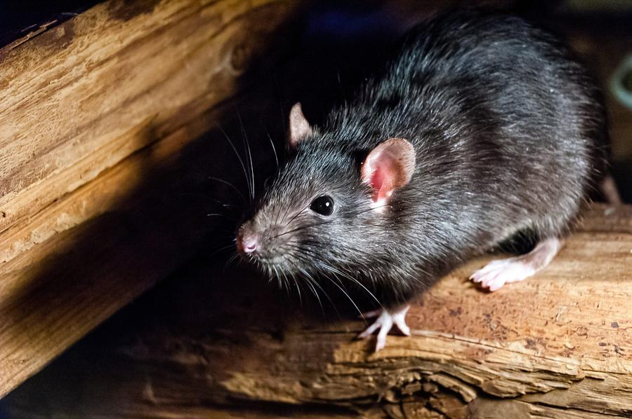

Sinais em casa
Fezes, barulho no forro, cheiro, fiação roída ou rato visto de noite.
Controle de ratos · Vale dos Sinos
Porta-iscas com chave. Equipe de Campo Bom. Certificado de execução. Orçamento no WhatsApp.
Pedir orçamento no WhatsAppDiz os sinais e a cidade. Ou liga (51) 3524-1049.

Isca fora do alcance de criança e pet
Contamina alimento, rói fiação e se espalha por esgoto e forro. Chumbinho e veneno solto põem criança e pet em risco — e quase nunca resolvem a colônia.

Fezes, barulho no forro, cheiro, fiação roída ou rato visto de noite.
Risco sanitário e fiscalização. Precisa de método documentado.
Produto dentro da estação, trancado. Abertura só para o roedor.
Criança e pet não alcançam a isca. Pontos depois da inspeção de rotas e tocas.
Pode levar até 5 dias. Se morresse na hora, os outros evitariam o local.
Sinais, cidade, casa ou empresa.
Tocas, entradas e pontos de iscagem.
Porta-iscas e orientação para vedar acesso.
Reincidência em 60 dias entra na assistência.
Alan e Renata de Sá · terceira geração em Campo Bom. Casa e empresa no Vale dos Sinos, Paranhana e Serra.
Fica dentro de porta-iscas fechados com chave. Não use veneno solto por conta própria.
Pode levar até 5 dias. Se morresse na hora, o restante da colônia evitaria o local.
Depende do imóvel e da infestação. Manda no WhatsApp a cidade e os sinais.
Assistência de 60 dias. Infestação grande pode pedir CIP (programa contínuo).
A equipe monta o orçamento e agenda. WhatsApp ou (51) 3524-1049.
Pedir orçamento no WhatsApp